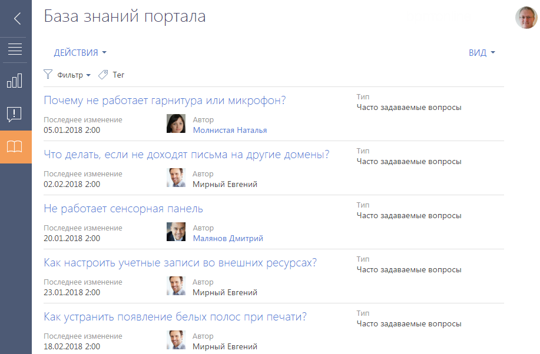
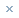
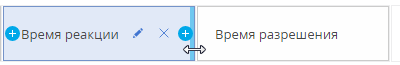

На портале пользователи могут найти ответы на часто задаваемые вопросы, воспользоваться справочной информацией и другими материалами, опубликованными в базе знаний портала, а также самостоятельно зарегистрировать обращение в службу поддержки или оперативно получить ответ на свой вопрос от сотрудников компании в ленте. Также портал может использоваться клиентами и партнерами компании для автоматизации пользовательских процессов, например, согласования заявок, предоставления услуг и т. д.
В этой документации рассмотрим все возможности, которые предоставляет пользователям базовая версия портала.
-
Регистрация и вход на портал — в статье описана последовательность самостоятельной регистрации пользователя портала. Здесь же описано, как войти на портал и доступна инструкция по изменению или восстановлению пароля пользователя портала.
-
База знаний портала — описание ресурса справочной информации и его возможностей. Разные способы поиска материалов в базе знаний портала.
-
Обращения портала — статья о канале коммуникации пользователей портала самообслуживания со службой поддержки. Описание всех операций, которые выполняются с обращением: регистрация, отмена, обратная связь по обращению и др.
-
Работа с реестром портала — в статье описана настройка колонок для отображения в реестрах портальных разделов. Также доступна инструкция по настройке групп для фильтрации записей в разделе.
Регистрация и вход на портал
Для начала работы с порталом необходимо быть зарегистрированным пользователем портала и пройти процедуру авторизации.
Есть следующие способы регистрации пользователя портала:
-
Пользователь может самостоятельно зарегистрироваться на портале.
-
Администратор системы может зарегистрировать пользователя портала в основном приложении.
-
Администратор организации может зарегистрировать пользователя на портале. Настройки, выполняемые администратором организации, описаны в статье “Возможности администратора портала”.
Самостоятельная регистрация на портале
При самостоятельной регистрации на портале необходимые лицензии и права доступа вам будут предоставлены автоматически.
Для регистрации:
Получить адрес доступа к порталу можно у администратора системы.
-
Откройте страницу входа на портал. Обычно адрес доступа к порталу состоит из адреса приложения и значения “SSPLogin.aspx” и выглядит примерно так: Например:
-
На странице авторизации на портале нажмите ссылку Зарегистрироваться (Рис. 1).
-
Введите необходимые регистрационные данные и нажмите кнопку Зарегистрироваться (Рис. 2).
-
По указанному при регистрации email-адресу будет отправлено письмо со ссылкой, по которой необходимо перейти для подтверждения регистрации.
После подтверждения регистрации вы можете войти в систему с использованием введенных регистрационных данных. В качестве логина используйте email-адрес.
Вход на портал
Для входа на портал необходимо авторизоваться.
-
Перейдите на страницу авторизации на портале. Для этого введите в адресную строку браузера адрес доступа к порталу, полученный от администратора системы. Подробнее адрес доступа к порталу описан выше в блоке “Самостоятельная регистрация на портале”.
-
На странице авторизации:
-
Если вы уже зарегистрированы на портале, то введите ваш логин и пароль и нажмите кнопку Войти. После входа вы будете перенаправлены на главную страницу портала.
-
Если вы еще не зарегистрированы и у вас нет логина и пароля, то вам необходимо пройти процедуру самостоятельной регистрации или обратиться к администратору.
-
Управление личными данными
На портале вы можете видеть и редактировать свои данные в профиле. Для этого нажмите на фотографию на портале —> Профиль (Рис. 1).
Для пользователей, которые входят в организацию, также доступна вкладка Обслуживание с данными о сервисных договорах компании и предоставляемых по ним сервисах.
Управление паролем
Вы можете изменить или восстановить пароль.
Восстановить пароль входа на портал
Если вы забыли пароль входа на портал:
-
На странице авторизации портала в поле Логин введите ваш email-адрес, указанный при регистрации, и нажмите на ссылку Забыли пароль? (Рис. 1).
-
По указанному при регистрации email-адресу будет отправлено письмо со ссылкой. После перехода по ссылке откроется специальная страница для ввода нового пароля.
Изменить пароль
Чтобы изменить текущий пароль:
-
Войдите на портал —> Настройки (Рис. 1).
-
Нажмите кнопку Изменить пароль. Введите текущий пароль и дважды новый (Рис. 2).
-
После нажатия кнопки Изменить пароль новый пароль будет сохранен.
База знаний портала
База знаний представляет собой хранилище справочной информации. Например, здесь хранятся ответы на часто задаваемые вопросы, регламенты и инструкции, шаблоны документов и рекламные материалы. Вы можете не только найти необходимую вам информацию, но и оставить свои комментарии к опубликованным материалам (Рис. 1).

Страница статьи базы знаний
Страница статьи базы знаний состоит из набора полей общих данных, а также вкладок Основная информация и Файлы.
|
Поле |
Описание |
|---|---|
|
Название |
Заголовок статьи базы знаний |
|
Тип |
Тип статьи базы знаний, например, “Положения и регламенты” или “Часто задаваемые вопросы”. |
|
Изменил |
Автор последнего изменения статьи. |
|
Дата изменения |
Дата и время последнего изменения статьи базы знаний. |
Вкладка Основная информация содержит область отображения текста статьи, а также дополнительную область для внесения комментариев по статье.
Вы можете оставлять комментарии к статьям базы знаний. Для этого введите текст в поле в нижней части страницы и нажмите кнопку Опубликовать.
Вкладка Файлы используется для хранения файлов и ссылок, касающихся статьи. Например, с детали Файлы и ссылки можно загрузить связанные со статьей документы или воспользоваться полезными ссылками (Рис. 1).
Как найти статью в базе знаний
Для быстрой и удобной работы с материалами базы знаний вы можете воспользоваться встроенными возможностями поиска:
-
Запустить поиск по базе знаний с главной страницы портала.
-
Настроить фильтр в разделе База знаний портала. Последовательность настройки описана ниже в этой статье.
-
Присвоить тег или набор тегов любой записи на портале, а затем отфильтровать записи в разделе по тегам. Пример тегирования записей описан в статье “Как тегировать записи на портале”.
Чтобы настроить фильтр в разделе База знаний портала:
-
Перейдите в раздел База знаний портала.
-
В меню Фильтр выберите команду Добавить условие (Рис. 1).
-
Для поиска статьи по названию выберите поле Название, введите заголовок статьи целиком или его фрагмент и нажмите кнопку
 (Рис. 2).
(Рис. 2).После нажатия кнопки
на странице отобразятся только записи, соответствующие настроенному фильтру (Рис. 3).Для того чтобы отключить заданную фильтрацию, нажмите кнопку .
Обращения портала
Раздел Обращения портала доступен по умолчанию на портале самообслуживания. Он предназначен для самостоятельной регистрации обращений, управления ими, а также служит каналом коммуникации пользователей со службой поддержки.
Страница обращения на портале
Страница обращения состоит из профиля обращения (1), индикатора процесса (2), панели ввода сообщений (3), а также вкладки Обработка (4) (Рис. 1).
Страница обращения содержит кнопку Пожаловаться, используемую для оперативной передачи в службу поддержки комментариев и пожеланий по обработке вашего обращения. При нажатии этой кнопки отображается окно для публикации комментариев и пожеланий.
В левой верхней части страницы отображаются номер и тема обращения. Номер формируется системой автоматически в соответствии с заданным шаблоном. Тема обращения также формируется автоматически в зависимости от выбранной категории и сервиса.
В левой части страницы расположен профиль обращения (1), который содержит основную информацию об обращении.
В правой верхней части страницы обращения размещен индикатор процесса (2), с помощью которого можно отслеживать состояние обращения.
Под индикатором процесса расположена область ввода сообщений (3), в которой можно указать подробную информацию при создании обращения и вести дальнейшую переписку по обращению с сервисными инженерами. К сообщению можно прикрепить файл, например, изображение, иллюстрирующее ошибку.
Профиль записи
Основная информация об обращении.
|
План. реакция |
Планируемый срок, отсчитываемый от времени поступления обращения до момента начала его обработки. Рассчитывается автоматически в соответствии с выбранным сервисом. Поле недоступно для редактирования. Справа от поля отображается индикатор остатка времени или задержки фактического срока реакции. |
|
План. разрешение |
Планируемый срок, в течение которого данное обращение должно быть разрешено. Рассчитывается автоматически в соответствии с выбранным сервисом. Поле недоступно для редактирования. Справа от поля отображается индикатор остатка времени или задержки фактического срока реакции. |
|
Категория |
Категория обращения: запрос на обслуживание, инцидент или консультация (данная категория доступна только в продукте Financial Services Creatio, customer journey edition). После сохранения записи поле становится недоступным для редактирования. При указании сервиса поле заполняется автоматически в соответствии с выбранным сервисом. |
|
Сервисный договор |
Поле доступно только для продуктов, в которые входит Service Creatio, enterprise edition. При регистрации обращения поле заполняется автоматически в соответствии с правилами подбора сервисного договора. |
|
Сервис |
Сервис, работы по которому обеспечивают разрешение обращения. |
|
Конфигурационная единица |
Поле доступно только для продуктов, в которые входит Service Creatio, enterprise edition. |
Подбор сервисного договора
Подбор сервисного договора выполняется только для продуктов, в которые входит Servicr Creatio, enterprise edition.
Cервисный договор определяется путем выбора наиболее приоритетного из всех сервисных договоров заявителя. Приоритет выбора основного сервисного договора:
-
Сервисный договор контакта (пользователь портала указан как контакт для объекта обслуживания).
-
Сервисный договор департамента (департамент пользователя портала указан как объект обслуживания).
-
Сервисный договор контрагента (контрагент пользователя портала указан как объект обслуживания).
Если по таким условиям есть одна уникальная запись — она будет указана автоматически в поле Сервисный договор. Если по таким условиям есть несколько подходящих договоров — поле Сервисный договор останется пустым, а все возможные варианты будут доступны для выбора. Если по условиям нет подходящих записей, то поле будет заполнено сервисным договором по умолчанию.
Вкладка [Обработка]
Обратная связь
Сведения об оценке обращения и причине его закрытия.
|
Уровень удовлетворенности |
Оценка уровня предоставления услуги, которую пользователь может дать по результатам обработки обращения. |
|
Комментарий к оценке |
Дополнительные пояснения к поставленной оценке. |
Деталь отображается на странице после перевода обращения в состояние “Решено”, “Закрыто” или “Отменено”. Создателю обращения будет отправлено email-сообщение с уведомлением о необходимости заполнить поля обратной связи.
История
Деталь отображает историю коммуникаций по инциденту или запросу на обслуживание, а также историю разрешения данного обращения. История включает:
-
Email-сообщения по данному инциденту или запросу на обслуживание.
-
Сообщения на портале, оставленные сотрудниками для пользователей. Сообщения, которые содержат вложения, отмечены пиктограммой
 . Первое вложение отображается в виде ссылки в левом нижнем углу сообщения. Чтобы просмотреть остальные вложения, нажмите на ссылку Читать дальше.
. Первое вложение отображается в виде ссылки в левом нижнем углу сообщения. Чтобы просмотреть остальные вложения, нажмите на ссылку Читать дальше.
Создать обращение на портале
Создать обращение на портале вы можете двумя способами — из раздела Обращения портала по кнопке Добавить обращение (Рис. 1) или на главной странице портала по кнопке Создать в блоке “Мои обращения”.
При этом будет открыта страница регистрации нового обращения, где вы можете заполнить соответствующие поля нужной информацией (Рис. 2).
-
Поле Сервисный договор (доступно только для продуктов, в которые входит Service Creatio, enterprise edition) будет заполнено автоматически в соответствии с правилами подбора сервисного договора. Если у вас есть несколько сервисных договоров, то вы можете самостоятельно выбрать необходимый.
-
В поле Сервис выберите из списка значение сервиса, который максимально близко характеризует ваше обращение. При выборе сервиса система автоматически определит категорию обращения и заполнит плановые даты реакции и разрешения (Рис. 2).
-
Внесите расширенное описание вашего вопроса в область ввода сообщения (Рис. 3).
-
При необходимости вы можете прикрепить файл, который будет иллюстрировать, уточнять или дополнять указанную информацию. Для этого нажмите кнопку под областью ввода сообщения и выберите нужный файл. Вы можете добавить несколько файлов к каждому сообщению. Прикрепленные файлы отобразятся в виде ссылок (Рис. 4).
-
В завершение нажмите кнопку Сохранить или Опубликовать (Рис. 5).
В результате обращение будет сохранено и ему будет автоматически присвоен уникальный номер.
Как управлять обращениями на портале
Вы можете управлять состоянием вашего обращения прямо с его страницы на портале. В меню кнопки Действия страницы обращения вам доступны следующие действия (Рис. 1):
-
Отменить обращение;
-
Закрыть обращение;
-
Переоткрыть обращение.
Отмена обращения на портале
Если вы самостоятельно нашли решение вашего обращения или оно было создано по ошибке, то вы можете отменить обращение. Для этого в меню кнопки Действия выберите команду Отменить обращение.
В основном приложении сотрудник службы поддержки увидит следующие изменения по обращению:
-
состояние обращения изменится на “Отменено”;
-
в поле Причина закрытия будет автоматически установлено значение “Отменено пользователем”;
-
в полях Первое решение, Фактическое решение и Дата закрытия будут автоматически заполнены дата и время отмены обращения на портале самообслуживания.
Закрытие обращения на портале
После успешного применения решения по обращению, предоставленного службой технической поддержки, вы можете самостоятельно закрыть обращение на портале самообслуживания, если оно не было ранее закрыто сервисным инженером. Для этого в меню кнопки Действия выберите команду Закрыть обращение.
В основном приложении сотрудник службы поддержки увидит следующие изменения по обращению:
-
состояние обращения изменится на “Закрыто”;
-
в поле Причина закрытия будет автоматически установлено значение “Закрыто пользователем”;
-
в поле Дата закрытия будут автоматически заполнены дата и время закрытия обращения на портале самообслуживания.
Переоткрытие обращения на портале
Вы можете самостоятельно переоткрыть обращения, которые находятся в состоянии паузы (“Ожидает ответа”) или решения (“Решено”).
Чтобы переоткрыть обращение, в меню кнопки Действия выберите команду Переоткрыть обращение.
В основном приложении сотрудник службы поддержки увидит, что состояние обращения изменилось на “Переоткрыто”.
История обработки обращения
В процессе обработки обращения вы можете вести переписку со специалистом службы поддержки. О появлении нового сообщения по обращению на портале вы будете уведомлены по email. Вся история общения отображается на вкладке Обработка страницы обращения (Рис. 1).
Эта вкладка служит каналом коммуникации пользователей со специалистами службы поддержки касательно разрешения обращения. По умолчанию вы можете оставлять комментарии только к тем обращениям, которые не находятся в состоянии “Закрыто” или “Отменено”.
Для публикации нового сообщения введите текст в соответствующее поле и нажмите кнопку Опубликовать.
При необходимости к сообщению может быть присоединен вложенный файл. Отправленные файлы в переписке отображаются в виде миниатюр, по нажатию на которые файлы открываются (Рис. 2). Чтобы скачать вложение, нажмите на заголовок файла внизу миниатюры.
Обратная связь по обращениям
Вы можете оценить качество работ по обращению на любом этапе его жизненного цикла.
По результатам обработки обращения можно оценить удовлетворенность обслуживанием, заполнив поля детали Обратная связь страницы обращения Деталь отображается на странице после перевода обращения в состояние “Решено”, “Закрыто” или “Отменено”. Пользователю портала будет отправлено email-сообщение с уведомлением о необходимости заполнить поля обратной связи.
Если в ходе обработки вашего обращения у вас появились комментарии или пожелания, то их можно оперативно передать в службу поддержки. Для этого:
-
Откройте страницу обращения на портале самообслуживания.
-
Нажмите кнопку Пожаловаться в верхнем левом углу страницы обращения (Рис. 1).
-
В открывшемся окне введите свой отзыв.
-
Нажмите кнопку Пожаловаться.
Комментарий с типом “Жалоба” отобразится в истории коммуникаций на странице обращения. Это позволит обратить особое внимание сотрудников службы поддержки на решение обращения и улучшить качество оказания услуг.
В отличие от обычных комментариев, жалобы можно оставлять по закрытым и отмененным обращениям.
Работа с реестром портала
Данные в разделах портала самообслуживания представлены в виде реестра. Реестр представляет собой список записей, каждая из которых состоит из набора полей. Внешний вид реестра и набор отображаемых полей вы можете настроить индивидуально.
Как настроить отображение данных в разделах портала
Внешний вид реестра и набор отображаемых полей вы можете настроить индивидуально. Для настройки реестра используйте меню Вид (Рис. 1).
-
Перейдите в раздел Обращения портала.
-
В меню кнопки Вид выберите команду Настроить колонки.
-
Выделите колонку, рядом с которой хотите отобразить информацию, и нажмите кнопку возле ее границы (Рис. 2).
В результате откроется окно. В открывшемся окне укажите колонку “Время реакции” и нажмите кнопку Выбрать.
-
Отрегулируйте ширину новой колонки. Для этого наведите курсор мыши на правую границу колонки, и когда граница станет голубой, захватите и потяните в нужную сторону.
Рис. 3 — Изменение ширины колонокОцените результат в режиме предпросмотра и сохраните изменения.
Как группировать записи на портале
Для сегментации записей на портале используйте группы. Для перехода к настройке групп используйте команду Показать группы меню Фильтр (Рис. 1).

Вы можете создать нужную структуру групп и определить правила их наполнения самостоятельно. Удаление группы не приводит к удалению записей, которые в нее входят.
Для удобства работы с данными вы можете настроить в разделах многоуровневую структуру групп. При этом если запись входит в одну из подчиненных групп, она может не входить в родительскую группу.
Чтобы создать родительскую группу, в структуре групп выберите папку “Все” и нажмите кнопку Добавить группу.
Чтобы создать подчиненную группу, в структуре групп выберите родительскую группу и нажмите кнопку Добавить группу.
-
Перейдите в раздел Обращения портала.
-
В меню Фильтр раздела выберите команду Показать группы.
-
Нажмите кнопку Добавить группу.
-
В открывшемся окне введите название группы и нажмите кнопку OK.
-
Установите условие фильтрации: “Категория обращения = Запрос на обслуживание”:
-
Нажмите на ссылку <Добавить условие>.
-
В открывшемся окне выберите колонку обращения “Категория”.
-
В области настройки фильтров нажмите на ссылку <?>. В открывшемся окне отметьте необходимое значение для выбранной колонки — “Запрос на обслуживание.
-
-
Аналогичным образом добавьте условия: “Состояние = Новое”, “Состояние = В работе”, “Состояние = Ожидает ответа”.
-
Сгруппируйте условия по состоянию обращений и установите для них логический оператор “ИЛИ”, чтобы в группу были добавлены обращения, находящиеся в любом из перечисленных состояний:
-
Удерживая клавишу CTRL, выберите мышью те условия, которые необходимо сгруппировать для установки другого логического оператора.
-
В меню кнопки Действия выберите команду Группировать. В результате выбранные условия будут объединены в отдельную группу со своим логическим оператором.
-
Кликнув мышью по заголовку логического оператора, установите для созданной группы оператор “ИЛИ”.
-
-
Нажмите Сохранить (Рис. 2).
Как фильтровать записи на портале
Для удобного поиска по списку записей в разделах портала предусмотрены фильтры.
Для перехода к настройке условий фильтрации записей реестра используйте команду Добавить условие меню Фильтр (Рис. 1).
-
Перейдите в раздел Обращения портала.
-
В меню Фильтр раздела выберите команду Добавить условие (Рис. 2).
-
Для поиска по номеру обращения выберите из списка поле Номер, введите номер обращения и нажмите кнопку (Рис. 3).
После этого на странице отобразятся только записи, соответствующие настроенному фильтру (Рис. 4). Чтобы отключить заданную фильтрацию, нажмите кнопку .
Как тегировать записи на портале
Для быстрого поиска информации по ключевым словам вы можете присвоить тег или набор тегов любой записи на портале.
Например, в разделе Обращения портала можно тегировать обращения, по которым ожидается реакция, а затем отфильтровать их по добавленному тегу.
Тегирование записей выполняется вручную. Создать тег и тегировать обращение можно на странице записи по кнопке  . Отфильтровать записи в разделе по тегам можно в меню Фильтр раздела (Рис. 1).
. Отфильтровать записи в разделе по тегам можно в меню Фильтр раздела (Рис. 1).